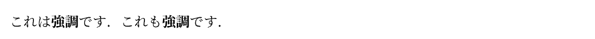
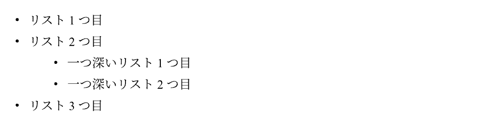
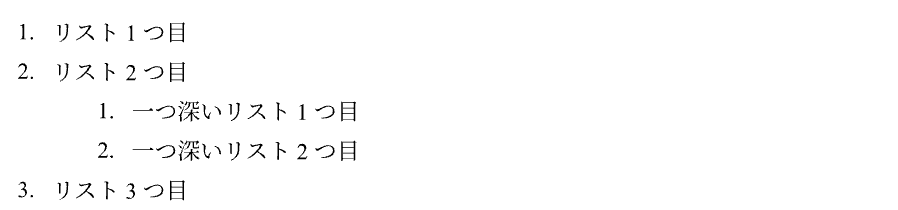

マークアップモード
マークアップモードは，文章を書くときに使用するモードです． ここでは，マークアップモードで使用できる様々なオプション表示について紹介します．
Table of contents
強調
例
これは*強調*です．
これも#strong[強調]です．
|  |
*で囲うことで，強調が可能です．*の代わりにstrong関数も使用できます（が，あえて使用する必要はないはずです）．
斜体
例
これは_itaric_です．
これも#emph[itaric]です．
日本語は_斜体_になりません．
_で囲うことで，斜体表現が可能です．_の代わりにemph関数も使用できます（が，あえて使用する必要はないはずです）．- 例のように，日本語では斜体は使用できません．
箇条書きリスト
例
- リスト1つ目
- リスト2つ目
- 一つ深いリスト1つ目
- 一つ深いリスト2つ目
- リスト3つ目
|  |
-で箇条書きリストとなります．- ハイフンの後に半角スペースを設けないと，そのままハイフンが表示されます．
-の位置を深くすることで，位置を制御することが可能です．
番号付きリスト
例
+ リスト1つ目
+ リスト2つ目
+ 一つ深いリスト1つ目
+ 一つ深いリスト2つ目
+ リスト3つ目
|  |
+で番号付きリストとなります．- プラスの後に半角スペースを設けないと，そのままプラスが表示されます．
+の位置を深くすることで，番号を制御することが可能です．